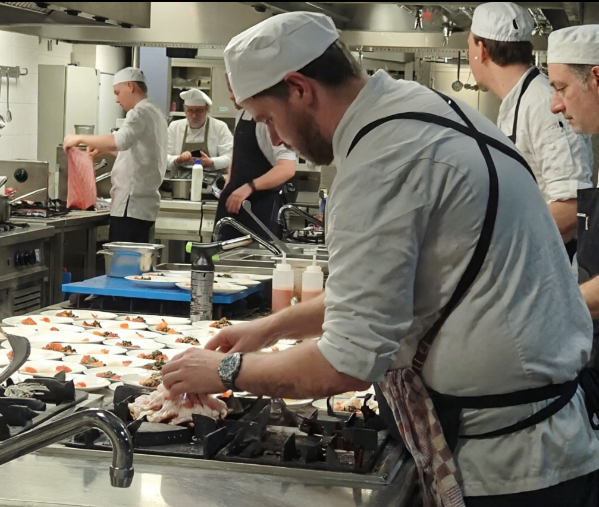
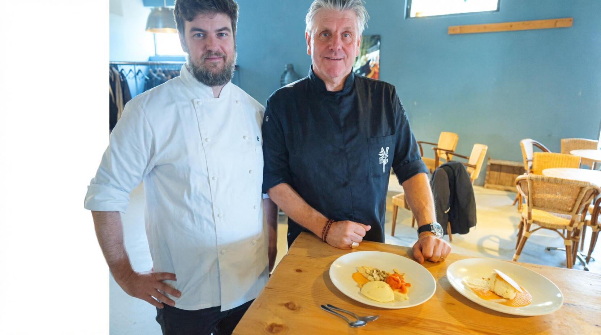
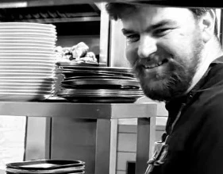

The Chef
A young chef with Michelin roots.
Tom de Ree is the Head Chef at Restaurant "Verrassing aan de Zaan" in Zaandam, the Netherlands. Trained under some of the most respected names in fine dining, he has spent his career in Michelin-starred kitchens — learning, refining, and developing a voice that is entirely his own.
His cooking is grounded in the Dutch landscape: ingredients sourced from local farms, fish from the IJsselmeer, and herbs foraged from the Zaan region. Every plate tells a story of place and season.
The star is not yet his — but the pursuit of it shapes every dish that leaves his pass.